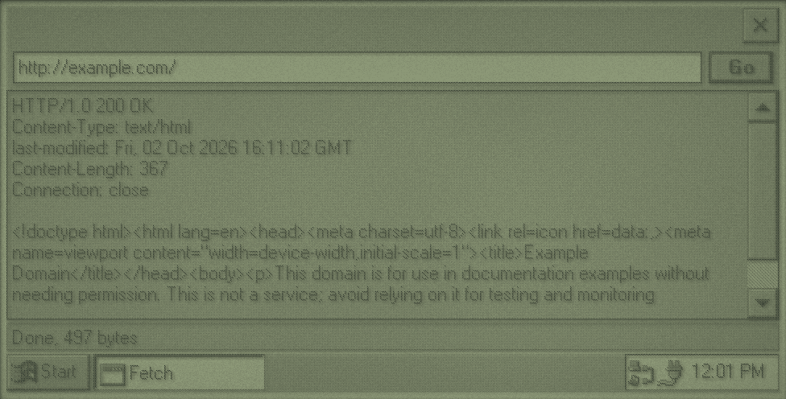

Getting Online
A Velo reaches the network with PPP over its serial port, through a cable to a PC or a modem. Once it's connected, Winsock works as on any other system. velo-emu provides that link with its own small network: start it with --net=SECONDS on headless, or from the PC Link menu in the window.
The catch is security. The Velo can't speak modern TLS, so it can't make an https:// connection to anything on today's internet. It needs a proxy: a program on a PC that takes plain HTTP requests from the Velo and makes the HTTPS requests for it. velo-emu has one built in, at 10.0.2.4 port 8080:
- It fetches an
http://address over HTTPS first, then plain HTTP, so you can ask forhttp://bsky.social/...and get the real thing. - It turns pictures (PNG, JPEG, GIF, BMP, SVG) into four-grey GIFs at most 436 pixels wide.
- It compresses responses with gzip when the request has
Accept-Encoding: gzip. - Through it,
127.0.0.1means your Mac, so you can test against a server running there.
On a real Velo you'd run a proxy that does the same on the PC it connects to. Make the proxy a setting in your program, as velo-bluesky does, and let it be blank to connect directly to a plain HTTP server.
Winsock in Brief
Link velo::winsock and include winsock.h. It's BSD sockets with Windows names: socket, connect, send, recv, select, closesocket (not close), gethostbyname and inet_addr. A few CE details:
- The Velo's Winsock exports no
WSAStartup: just callsocket. - Calls block, and
connectcan block for a long time when the network isn't there. Never call them on the thread that runs your windows. - Use
selectwith a short timeout before eachrecv. That gives you a place to check for cancellation and to give up on a silent server. - Socket handles are
SOCKET, and failure isINVALID_SOCKETorSOCKET_ERROR, not -1.
HTTP through a proxy
HTTP/1.0 is the easiest dialect to write by hand: one request per connection, no chunked encoding, and the response ends when the server closes the connection. Through a proxy, the request line has the full address:
GET http://example.com/ HTTP/1.0
Host: example.com
Connection: closeThen a blank line, and the response comes back as a status line, headers, a blank line and the body. The fetch example does exactly this on a worker thread, and shows the raw response:

fetch on CE 1.0, through velo-emu's proxy. The tray shows the network connection.static const WCHAR *fetch(fetch_t *request) {
struct sockaddr_in proxy = {0};
proxy.sin_family = AF_INET;
proxy.sin_port = htons(PROXY_PORT);
proxy.sin_addr.s_addr = inet_addr(PROXY_HOST);
SOCKET connection = socket(AF_INET, SOCK_STREAM, IPPROTO_TCP);
if (connection == INVALID_SOCKET) {
return L"No sockets. Is the Velo connected?";
}
if (connect(connection, (struct sockaddr *)&proxy, sizeof proxy) == SOCKET_ERROR) {
closesocket(connection);
return L"Couldn't connect to the proxy.";
}
BOOL sent = send_text(connection, "GET ") && send_text(connection, request->url) && send_text(connection, " HTTP/1.0\r\nHost: ") &&
send_text(connection, request->host) && send_text(connection, "\r\nConnection: close\r\n\r\n");
const WCHAR *error = sent ? NULL : L"The connection closed while sending.";
DWORD last_data = GetTickCount();
while (!error && request->length < RESPONSE_MAX - 1) {
fd_set readable = {1, {connection}};
struct timeval interval = {0, 250000};
int ready = select(0, &readable, NULL, NULL, &interval);
if (ready == SOCKET_ERROR) {
error = L"The connection failed.";
} else if (ready == 0) {
if (GetTickCount() - last_data > TIMEOUT_MILLISECONDS) {
error = L"The server stopped answering.";
}
} else {
int got = recv(connection, request->data + request->length, RESPONSE_MAX - 1 - request->length, 0);
if (got <= 0) {
break;
}
request->length += got;
last_data = GetTickCount();
PostMessageW(request->notify, WM_FETCH_PROGRESS, (WPARAM)request->length, 0);
}
}
closesocket(connection);
request->data[request->length] = 0;
return error;
}A real client goes further: it parses the status and headers, honours Content-Length, decompresses gzip, and hands the body to a parser as it arrives. velo-bluesky's src/http.c is about 300 lines and does all of that, with POST bodies and an Authorization header.
Worker Threads
Your windows belong to the thread that created them, the one running the message loop. If that thread is waiting on the network, nothing repaints and taps go nowhere. So network work goes on a second thread, and the two talk through messages.
Start the work
static void start_fetch(HWND frame) {
WCHAR wide_url[ADDRESS_MAX];
if (busy) {
return;
}
fetch_t *request = LocalAlloc(LPTR, sizeof(fetch_t));
if (!request) {
set_status(L"Not enough memory.");
return;
}
GetWindowTextW(address, wide_url, ADDRESS_MAX);
for (int index = 0; index < ADDRESS_MAX; index++) {
request->url[index] = wide_url[index] < 0x80 ? (char)wide_url[index] : '?';
if (!wide_url[index]) {
break;
}
}
host_from_url(request->url, request->host, ADDRESS_MAX);
request->notify = frame;
HANDLE thread = CreateThread(NULL, 0, fetch_thread, request, 0, NULL);
if (!thread) {
LocalFree(request);
set_status(L"Couldn't start a thread.");
return;
}
CloseHandle(thread);
busy = TRUE;
EnableWindow(go_button, FALSE);
SetWindowTextW(page, L"");
set_status(L"Connecting...");
}Everything the thread needs goes in one allocated struct, so the interface can't change it underneath. The handle from CreateThread is closed at once: the thread keeps running, and closing just says you won't wait for it.
Report back
static DWORD WINAPI fetch_thread(void *parameter) {
fetch_t *request = parameter;
request->error = fetch(request);
if (!PostMessageW(request->notify, WM_FETCH_DONE, 0, (LPARAM)request)) {
LocalFree(request);
}
return 0;
}The worker never touches a window. It posts a message from the WM_APP range to the frame, with the request in lParam, and that hands the memory over: the frame's handler frees it. If PostMessageW fails, nobody will receive it, so the thread frees it itself. Progress works the same way, with numbers in wParam:
case WM_FETCH_PROGRESS: {
WCHAR status[64];
wsprintfW(status, L"Received %d bytes", (int)wparam);
set_status(status);
return 0;
case WM_FETCH_DONE:
fetch_done((fetch_t *)lparam);
return 0;
static void fetch_done(fetch_t *request) {
WCHAR *text = LocalAlloc(LPTR, (RESPONSE_MAX * 2 + 1) * sizeof(WCHAR));
if (text) {
utf8_to_edit_text(request->data, request->length, text, RESPONSE_MAX * 2 + 1);
SetWindowTextW(page, text);
LocalFree(text);
}
if (request->error) {
set_status(request->error);
} else {
WCHAR status[64];
wsprintfW(status, L"Done, %d bytes", request->length);
set_status(status);
}
LocalFree(request);
busy = FALSE;
EnableWindow(go_button, TRUE);
}Rules
- Only the interface thread calls window functions. Workers use
PostMessageW. - Data goes one way per message, in allocated memory the receiver frees.
- Shared state is protected by a
CRITICAL_SECTION:InitializeCriticalSectiononce, thenEnterCriticalSectionandLeaveCriticalSectionaround every use. - A
volatile LONGflag, set withInterlockedExchange, is enough to ask a worker to stop. Check it betweenselectcalls. - Don't let the user close the program while a worker is still using its windows: wait for it, or refuse
WM_CLOSEasfetchdoes.
A job queue
One thread per request is fine for a simple program. A client that makes many requests is better with one worker that runs jobs from a queue, one at a time: requests can't overwhelm a 19200 baud link, and cancelling is easy. velo-bluesky's src/worker.c is a complete version in about 300 lines. Its heart is this loop:
static job_t *take_job(void) {
EnterCriticalSection(&lock);
job_t *job = queue;
if (job) {
queue = job->next;
job->next = NULL;
}
running = job;
cancel_running = 0;
if (route_changed) {
client.route = pending_route;
route_changed = FALSE;
}
LeaveCriticalSection(&lock);
return job;
}
static DWORD WINAPI worker_main(void *parameter) {
(void)parameter;
while (!stopping) {
job_t *job = take_job();
if (!job) {
WaitForSingleObject(wake, INFINITE);
continue;
}
run(job);
EnterCriticalSection(&lock);
job->cancelled = cancel_running != 0;
running = NULL;
LeaveCriticalSection(&lock);
if (!PostMessageW(notify_window, WM_WORKER_DONE, 0, (LPARAM)job)) {
job_free(job);
}
}
return 0;
}worker_submit adds a job under the lock and sets the wake event. Each job gets a ticket number, so when the user moves on (say, to a different post) the interface can cancel the old job and ignore any results still on their way for it.
Testing Against Your Own Server
Because the proxy maps 127.0.0.1 to your Mac, a local server is the easiest way to test without the real internet, or to reproduce awkward responses:
python3 -m http.server 8123Then fetch http://127.0.0.1:8123/ on the Velo. velo-bluesky's tests/server.py is a fake Bluesky server in this style, which its automated tests use.